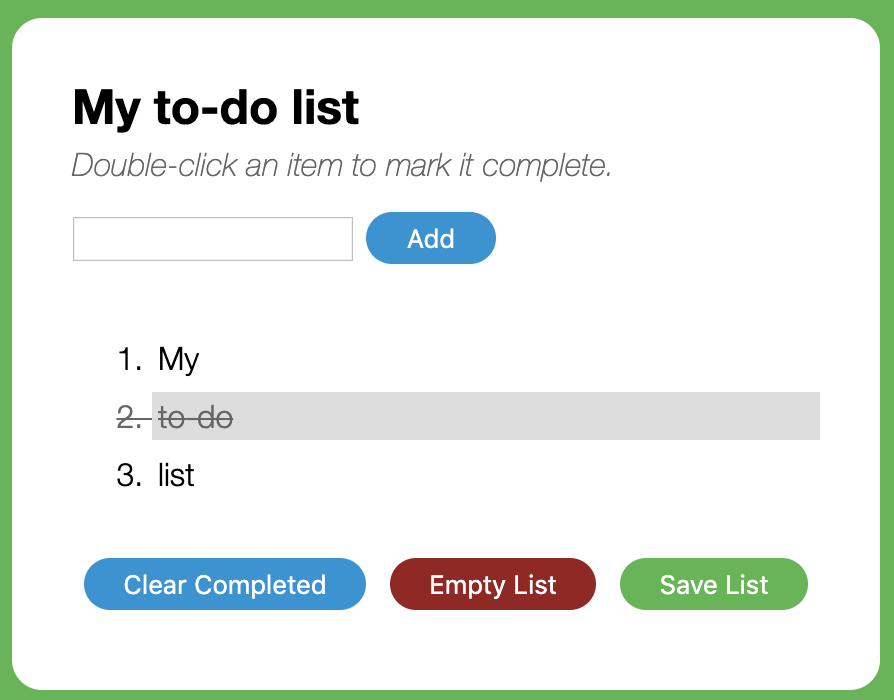

Create todo list with these features:
What you learn
- Creating your own JavaScript functions
- Listening for different user actions on a web page
- Using functions together to write code more professionally
- Saving user information between visits to your web page
List of features
- Add todo items
- Complete todo items
- Clear todo items
- Empty items
- Save list
- Load list
- When user refreshes the page, previous list suppose to be there.
